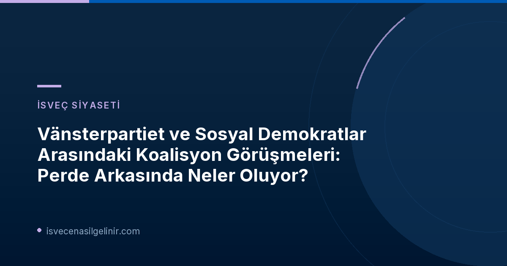

İsveç siyaset sahnesi, 2026 seçimleri sonrasında yeni bir hükümetin kurulması için yoğun görüşmelere sahne oluyor. Odak noktası ise Vänsterpartiet (Sol Parti) ile Sosyal Demokratlar (S) arasındaki potansiyel iş birliği. SVT Nyheter'de yer alan habere göre, Vänsterpartiet lideri Nooshi Dadgostar, Sosyal Demokrat lider Magdalena Andersson'un partisine yönelttiği eleştirileri gündeme taşıyarak, iki parti arasında sürekli bir iletişim olduğunu vurguladı.
Vänsterpartiet ve Sosyal Demokratlar Arasındaki Gerilim
Sosyal Demokrat lider Magdalena Andersson, Vänsterpartiet'in hükümette yer alabilmek için "uzun bir yol kat etmesi gerektiğini" ifade etmişti. Ancak Nooshi Dadgostar bu eleştiriyi "Sosyal Demokratlar'ın her zaman takındığı bir tavır" olarak reddediyor. Dadgostar'a göre, Sosyal Demokratların parti liderliği sağa eğilimli ve mesele, Vänsterpartiet'in önerdiği siyasi içeriğin ta kendisi.
Vänsterpartiet, politikalarını hayata geçirebilmek için hükümetin bir parçası olmayı bir şart olarak görüyor. Dadgostar, seçim kampanyası boyunca bu talebini defalarca dile getirdi ve partisinin hükümet dışında kaldığında politikalarının tam anlamıyla uygulanamadığını savundu.
Hükümet Kurma İhtimali ve Zorluklar
Nooshi Dadgostar, mevcut muhalefet partileri olan Sosyal Demokratlar (S), Yeşiller Partisi (MP), Vänsterpartiet (V) ve Merkez Parti (C)'nin bir araya gelerek bir hükümet kurması gerektiğine inanıyor. Ancak Merkez Parti bu oluşuma kesinlikle karşı çıkarken, Sosyal Demokrat lider Magdalena Andersson da şu ana kadar Vänsterpartiet'i hükümete dahil etme konusunda isteksiz görünüyor.
İsveç Vatandaşlığı ve Siyasi Gelişmeler
İsveç'te uzun vadeli ikamet etmeyi veya vatandaşlık almayı düşünen bireyler için ülkenin siyasi yapısını ve gelecekteki olası hükümet politikalarını takip etmek büyük önem taşır. Siyasi istikrar, göçmenlik yasaları ve toplumsal uyum politikaları gibi konularda yeni hükümetin atacağı adımlar, kişisel planlarınızı doğrudan etkileyebilir. İsveç vatandaşlık süreci hakkında detaylı bilgi almak ve güncel gereksinimleri öğrenmek için sverigemedborgarskapsprov.com adresini ziyaret edebilirsiniz.
Aşırıcılık Tartışmaları ve Vänsterpartiet
Vänsterpartiet, ilkbahar ve yaz aylarında, bazı adaylarının antisemitik görüşler dile getirmesi ve terörü övmesi gibi nedenlerle seçim listelerinden çıkarılmasıyla gündeme gelmişti. Magdalena Andersson, SVT'deki sorgulama programında bu olaylara atıfta bulunarak, "Vänsterpartiet'in kat etmesi gereken uzun bir yol var ve seçime kısa bir süre kaldı" demişti. Ancak Dadgostar, Andersson'un bu açıklamasının aşırılık tartışmalarıyla bir ilgisi olmadığını savundu. Ona göre bu, Sosyal Demokratlar'ın liderlik kadrosunun sağa kaymasıyla ilgili siyasi bir mesele.
Perde Arkasındaki Diyaloglar: "Her Zaman İletişim Halindeyiz"
Tüm bu gerilime rağmen Nooshi Dadgostar, Magdalena Andersson'un sonunda razı olacağına inanıyor. Seçim kampanyası sırasında dışarıdan görünmeyen bazı gelişmelerin yaşandığını ima eden Dadgostar, "Birbirimizle sürekli iletişim halindeyiz ve konuşuyoruz" ifadelerini kullandı. Dadgostar, Merkez Parti lideri Elisabeth Thand Ringqvist ile de temasta olup olmadığı sorusuna ise doğrudan yanıt vermedi, ancak birçok parti lideriyle iletişimde olduğunu ve medya üzerinden pazarlık yapmadıklarını belirtti. Seçim sonrası olası senaryolar hakkında da görüştüklerini teyit etti.
Referanslar:
İsveç'e Yolculuğunuz Başlasın!
İsveç'e göç, çalışma, eğitim veya vatandaşlık süreçleri hakkında en güncel ve kapsamlı bilgilere ulaşmak için sitemizi keşfedin. Uzman ekibimizle hayallerinizi gerçeğe dönüştürün!